DAL 1976
Una storia nata sull’Etna
A.S.D. · ADRANO, CT · DAL 1976
Dall’Etna alle piste d’Italia: una passione che cresce sulla neve, con lo sguardo rivolto più in alto.
DAL 1976
Una storia nata sull’Etna
0+
Soci · una comunità che condivide la montagna
0
Atleti nella squadra agonistica
ETNA → ALPI
Allenamenti fino ai ghiacciai d’estate
Nati ad Adrano nel 1976 e affiliati alla F.I.S.I., portiamo sulla neve l’energia di una comunità che ha scelto l’Etna come punto di partenza.
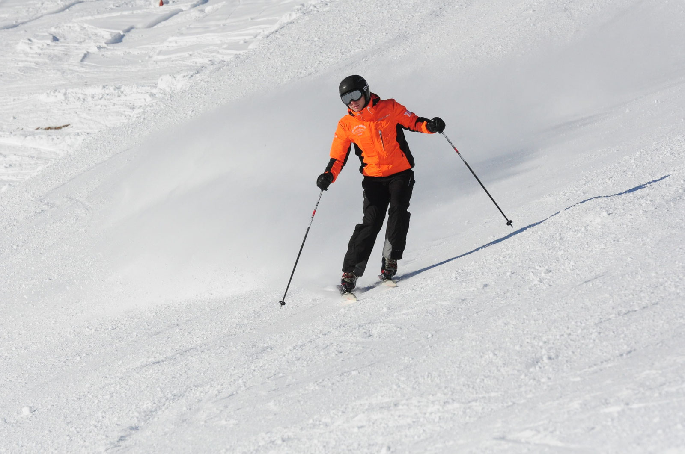
Lo Sci Club Adrano nasce nel 1976 per volontà di un gruppo di appassionati di montagna e da allora è affiliato alla Federazione Italiana Sport Invernali. Oggi riunisce più di 60 soci che praticano sci alpino, tra slalom e gigante.
La squadra agonistica conta circa 20 atleti di varie categorie e alcuni di loro hanno vestito la maglia della squadra regionale del Comitato Siculo. Gare e allenamenti si svolgono principalmente sull’Etna e in Calabria, proseguendo d’estate sui ghiacciai delle Alpi italiane e francesi.
Nelle ultime stagioni il Club si è costantemente classificato tra le prime tre società nelle graduatorie delle competizioni a cui ha partecipato: il risultato di una comunità che condivide montagna, metodo e passione.
“La montagna insegna
a guardare avanti.”
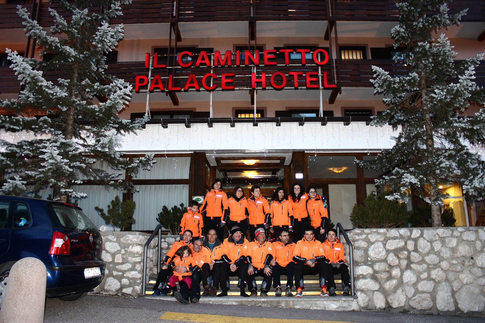
Nato ad Adrano per volontà di appassionati della montagna, il Club è affiliato alla F.I.S.I. fin dalle origini e oggi conta più di 60 soci.
Fiore all’occhiello dello Sci Club, la Coppa Adrano è stata organizzata per 5 edizioni negli anni ’90 e per 3 edizioni nel periodo 2000-2005.
Negli ultimi anni l’associazione ha organizzato 2 edizioni del Memorial Pippo Maccarrone e della Coppa Adrano, nel Circuito Pirovano in Friuli Venezia Giulia.
Dal primo incontro con gli sci alla preparazione per la gara: percorsi diversi, una direzione comune, tra Etna, Alpi e Appennini.
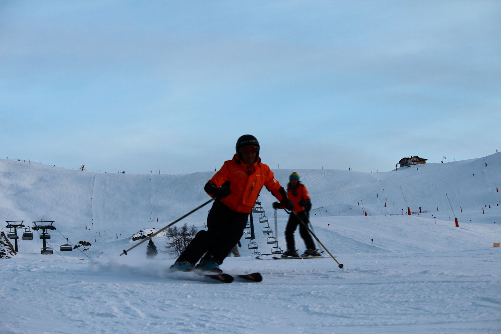
Corso di addestramento allo sci per ragazzi e principianti, per imparare in sicurezza partendo dalle piste dell’Etna.
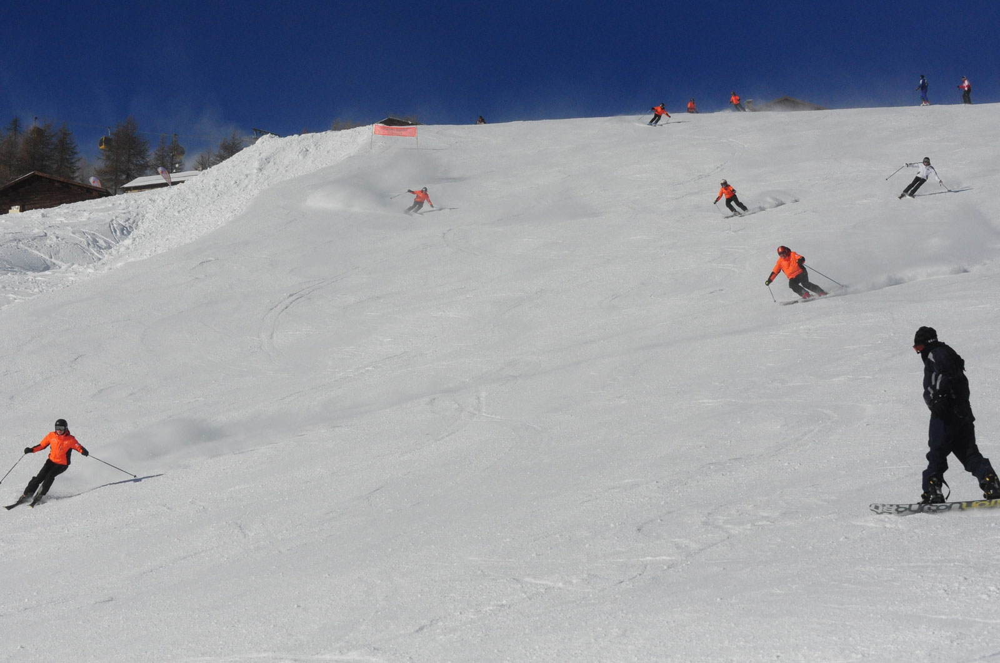
Circa 20 atleti di varie categorie, tra slalom e gigante, con presenza nella squadra regionale del Comitato Siculo.
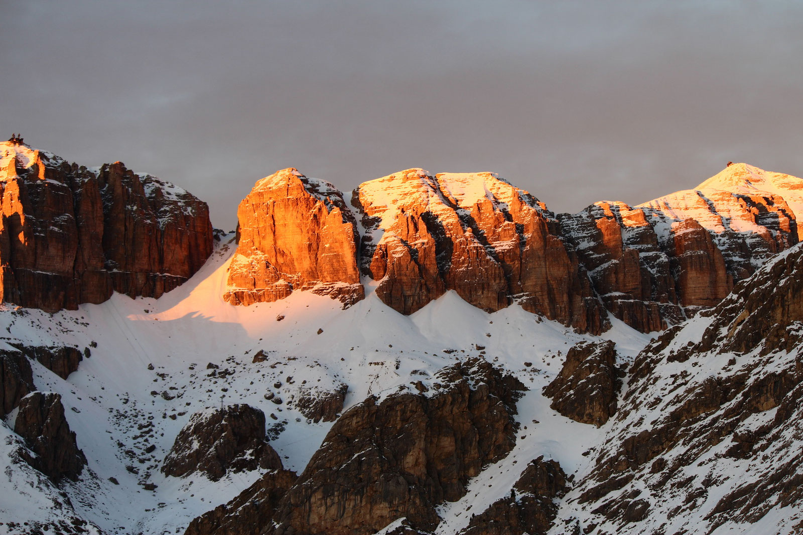
Etna Nord (Piano Provenzana) ed Etna Sud (Nicolosi), con trasferte su Alpi e Appennini: Folgarida, Marilleva, Madonna di Campiglio, Livigno, Canazei e Dolomiti Superski.
Ogni podio è il risultato di allenamento, passione e della forza di una squadra che parte da Adrano per misurarsi sulle piste d’Italia.
RISULTATI VERIFICATI
STAGIONI 2025 — 2026
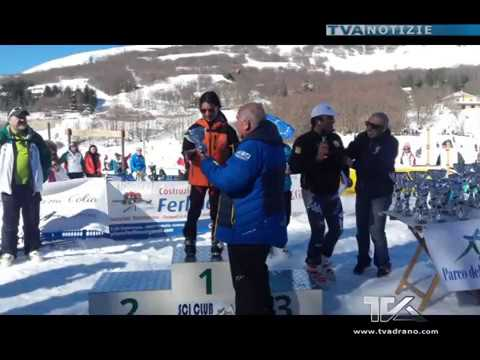
2025 · PIANO BATTAGLIA
Nella trasferta di Piano Battaglia lo Sci Club Adrano ha portato tre atleti sul podio: Irene Nicoletti e Cristina Nicoletti prime nelle rispettive categorie e Danilo Pignataro secondo tra i Seniores.
Slalom speciale2025 · PIANO BATTAGLIA
1ª classificata · categoria Super Baby
2025 · PIANO BATTAGLIA
1ª classificata · categoria Baby
2025 · PIANO BATTAGLIA
2° classificato · categoria Seniores
IL PROSSIMO TRAGUARDO
EVENTI CHE PORTIAMO IN PISTA Coppa Adrano · Memorial Pippo Maccarrone — manifestazioni organizzate dal Club. Nel 2026, a Piancavallo, lo Sci Club Adrano ha organizzato le gare di Coppa Sicilia, Coppa Adrano e Memorial Pippo Maccarrone.
Immagini dalle trasferte ufficiali dello Sci Club Adrano, tra Canazei, Livigno e le piste d’Italia.

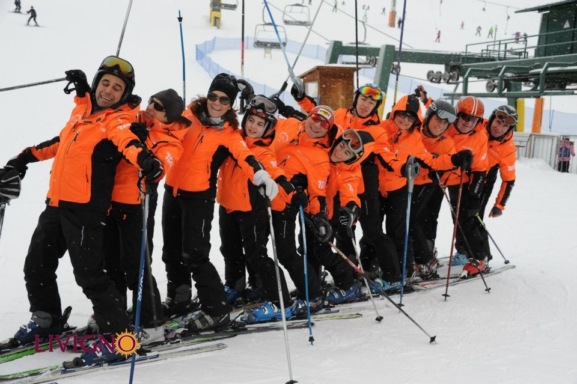
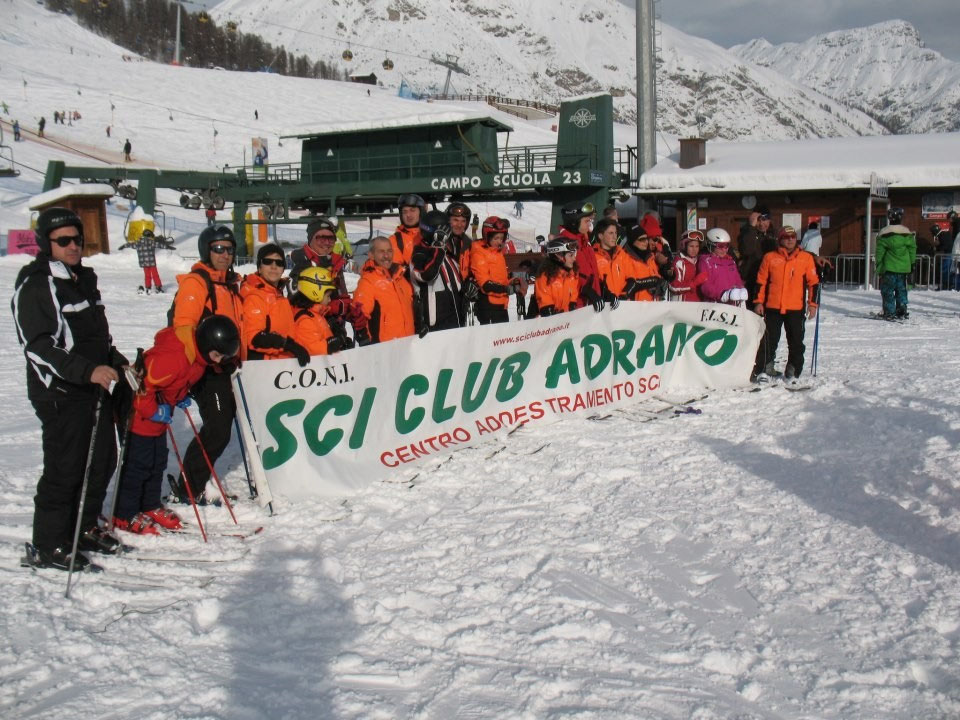
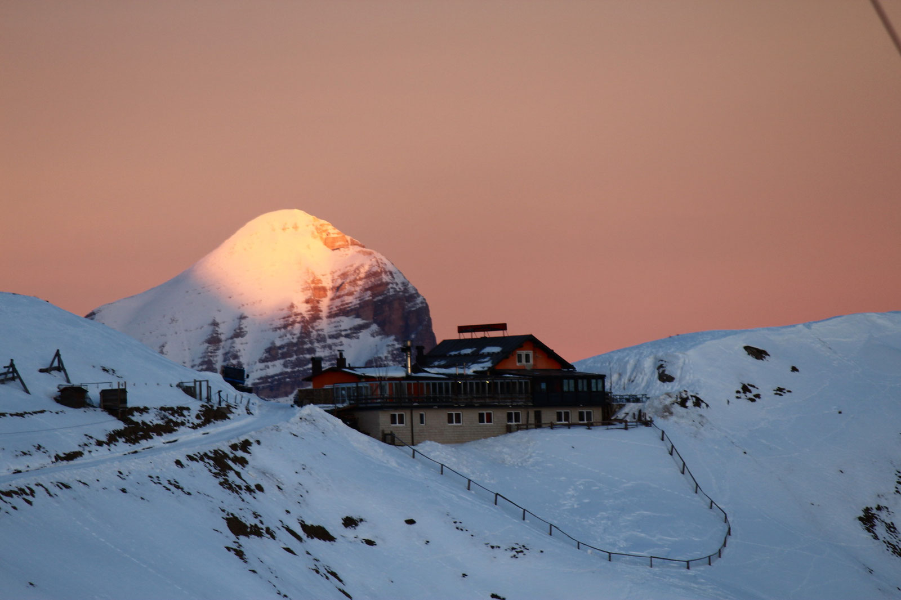
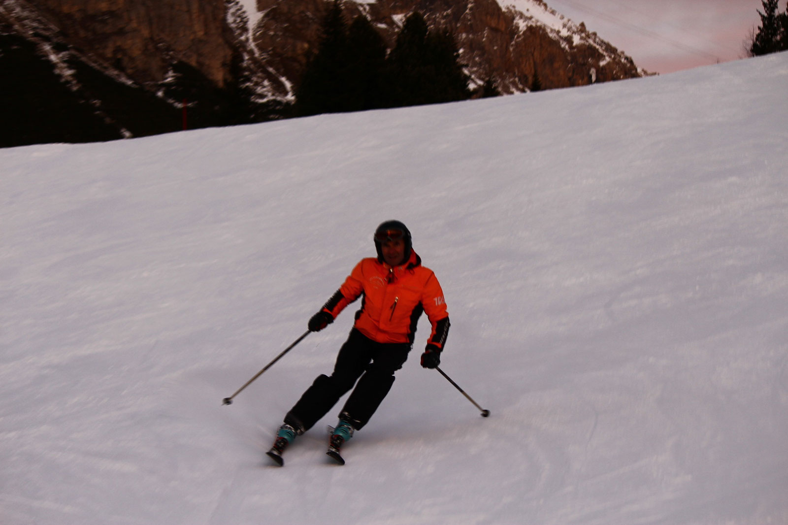
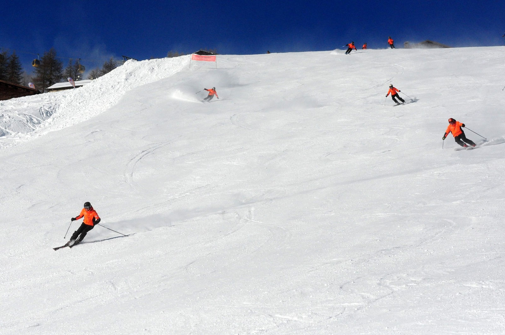
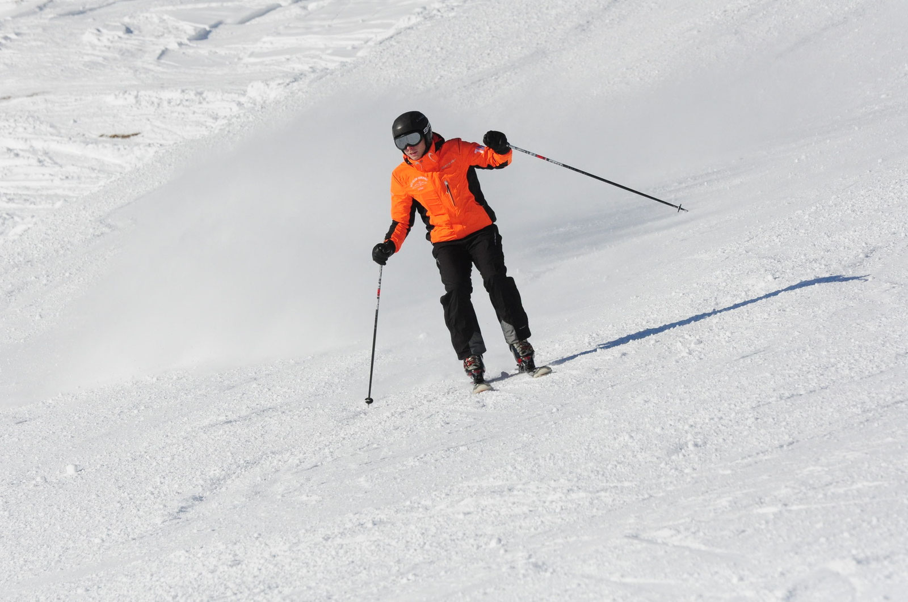
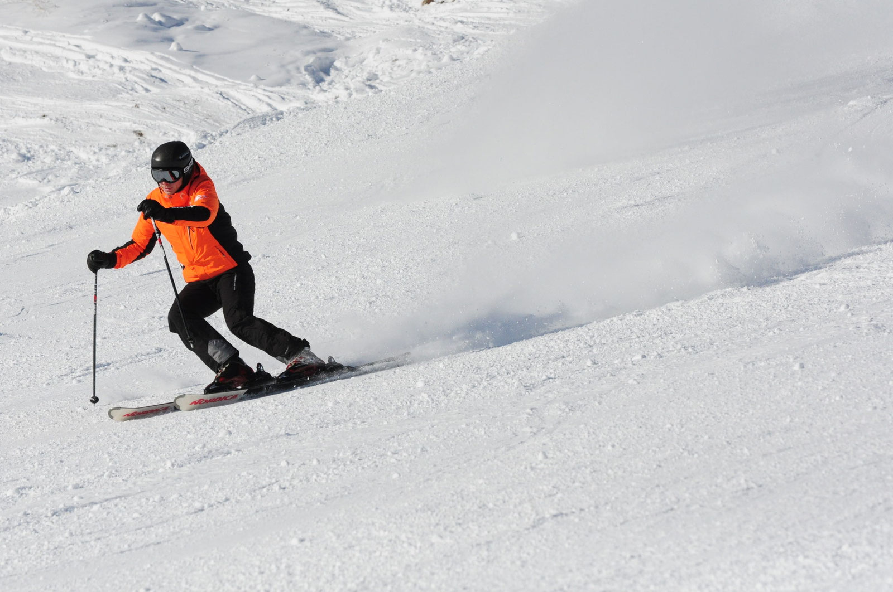
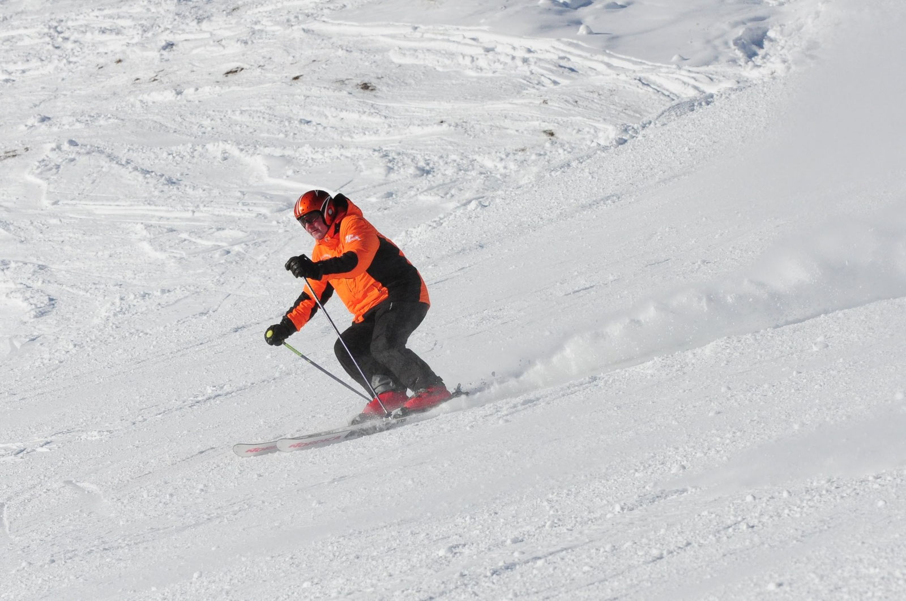
TESSERATI FISI · STAGIONE 2026/2027
Tesserati FISI e vivi la stagione con lo Sci Club Adrano. Cos’è la tessera, le quote, la copertura assicurativa e come fare la richiesta: tutto in una pagina.
Scopri il Tesseramento FISI328 916 9750 · 388 900 8751
sciclub.adrano@gmail.com
Per informazioni sul Club, sul tesseramento o sulle attività compila il modulo: il messaggio arriva direttamente alla segreteria.